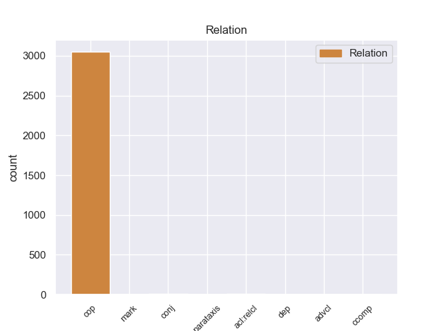
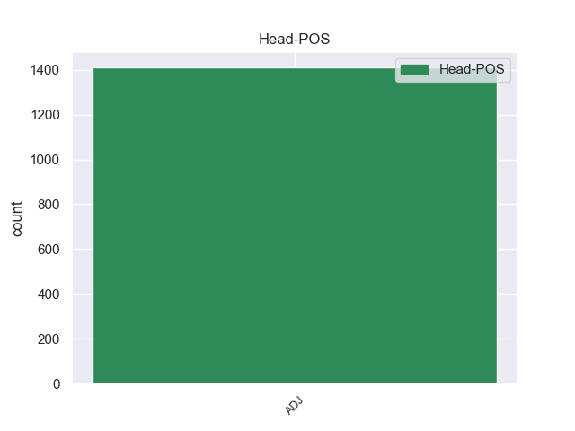
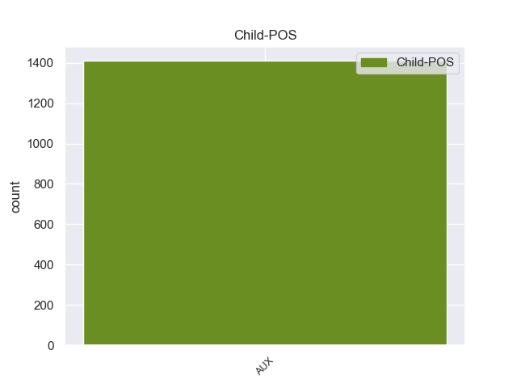

Distribution of features within this leaf



non-conforming Examples:
1 Los _ _ _ _ 0 _ _ _
2 pacientes _ _ _ _ 0 _ _ _
3 con _ _ _ _ 0 _ _ _
4 diabetes _ _ _ _ 0 _ _ _
5 son ser AUX _ Mood=Ind|Number=Plur|Person=3|Tense=Pres|VerbForm=Fin 9 cop _ _
6 cuatro _ _ _ _ 0 _ _ _
7 veces _ _ _ _ 0 _ _ _
8 más _ _ _ _ 0 _ _ _
9 propensos propenso ADJ _ Gender=Masc|Number=Plur 0 _ _ _
10 a _ _ _ _ 0 _ _ _
11 desarrollar _ _ _ _ 0 _ _ _
12 enfermedad _ _ _ _ 0 _ _ _
13 cardíacas _ _ _ _ 0 _ _ _
14 que _ _ _ _ 0 _ _ _
15 aquellos _ _ _ _ 0 _ _ _
16 que _ _ _ _ 0 _ _ _
17 no _ _ _ _ 0 _ _ _
18 tienen _ _ _ _ 0 _ _ _
19 diabetes _ _ _ _ 0 _ _ _
20 . _ _ _ _ 0 _ _ _
1 Pero _ _ _ _ 0 _ _ _
2 es ser AUX _ Mood=Ind|Number=Sing|Person=3|Tense=Pres|VerbForm=Fin 4 cop _ _
3 muy _ _ _ _ 0 _ _ _
4 importante importante ADJ _ Number=Sing 0 _ _ _
5 que _ _ _ _ 0 _ _ _
6 el _ _ _ _ 0 _ _ _
7 pueblo _ _ _ _ 0 _ _ _
8 recuerde _ _ _ _ 0 _ _ _
9 la _ _ _ _ 0 _ _ _
10 traición _ _ _ _ 0 _ _ _
11 de _ _ _ _ 0 _ _ _
12 Mauricio _ _ _ _ 0 _ _ _
13 Macri _ _ _ _ 0 _ _ _
14 quien _ _ _ _ 0 _ _ _
15 hoy _ _ _ _ 0 _ _ _
16 se _ _ _ _ 0 _ _ _
17 oculta _ _ _ _ 0 _ _ _
18 en _ _ _ _ 0 _ _ _
19 Italia _ _ _ _ 0 _ _ _
20 , _ _ _ _ 0 _ _ _
21 para _ _ _ _ 0 _ _ _
22 evadir _ _ _ _ 0 _ _ _
23 criticas _ _ _ _ 0 _ _ _
24 ante _ _ _ _ 0 _ _ _
25 una _ _ _ _ 0 _ _ _
26 colosal _ _ _ _ 0 _ _ _
27 deslealtad _ _ _ _ 0 _ _ _
28 e _ _ _ _ 0 _ _ _
29 incoherencia _ _ _ _ 0 _ _ _
30 de _ _ _ _ 0 _ _ _
31 su _ _ _ _ 0 _ _ _
32 parte _ _ _ _ 0 _ _ _
33 . _ _ _ _ 0 _ _ _
1 Creo _ _ _ _ 0 _ _ _
2 que _ _ _ _ 0 _ _ _
3 es ser AUX _ Mood=Ind|Number=Sing|Person=3|Tense=Pres|VerbForm=Fin 4 cop _ _
4 importante importante ADJ _ Number=Sing 0 _ _ _
5 que _ _ _ _ 0 _ _ _
6 la _ _ _ _ 0 _ _ _
7 democracia _ _ _ _ 0 _ _ _
8 sea _ _ _ _ 0 _ _ _
9 diálogo _ _ _ _ 0 _ _ _
10 y _ _ _ _ 0 _ _ _
11 no _ _ _ _ 0 _ _ _
12 se _ _ _ _ 0 _ _ _
13 responda _ _ _ _ 0 _ _ _
14 a _ _ _ _ 0 _ _ _
15 los _ _ _ _ 0 _ _ _
16 conflictos _ _ _ _ 0 _ _ _
17 sociales _ _ _ _ 0 _ _ _
18 con _ _ _ _ 0 _ _ _
19 bala _ _ _ _ 0 _ _ _
20 " _ _ _ _ 0 _ _ _
21 , _ _ _ _ 0 _ _ _
22 indicó _ _ _ _ 0 _ _ _
23 . _ _ _ _ 0 _ _ _
1 Presentan _ _ _ _ 0 _ _ _
2 hojas _ _ _ _ 0 _ _ _
3 disectas _ _ _ _ 0 _ _ _
4 , _ _ _ _ 0 _ _ _
5 laticíferos _ _ _ _ 0 _ _ _
6 y _ _ _ _ 0 _ _ _
7 las _ _ _ _ 0 _ _ _
8 flores _ _ _ _ 0 _ _ _
9 son ser AUX _ Mood=Ind|Number=Plur|Person=3|Tense=Pres|VerbForm=Fin 11 cop _ _
10 usualmente _ _ _ _ 0 _ _ _
11 zigomorfas zigomorfo ADJ _ Gender=Fem|Number=Plur 0 _ _ _
12 . _ _ _ _ 0 _ _ _
1 Al _ _ _ _ 0 _ _ _
2 crear _ _ _ _ 0 _ _ _
3 un _ _ _ _ 0 _ _ _
4 hogar _ _ _ _ 0 _ _ _
5 funcional _ _ _ _ 0 _ _ _
6 , _ _ _ _ 0 _ _ _
7 igual _ _ _ _ 0 _ _ _
8 que _ _ _ _ 0 _ _ _
9 cuando _ _ _ _ 0 _ _ _
10 una _ _ _ _ 0 _ _ _
11 familia _ _ _ _ 0 _ _ _
12 acogedora _ _ _ _ 0 _ _ _
13 se _ _ _ _ 0 _ _ _
14 ofrece _ _ _ _ 0 _ _ _
15 a _ _ _ _ 0 _ _ _
16 atender _ _ _ _ 0 _ _ _
17 a _ _ _ _ 0 _ _ _
18 algún _ _ _ _ 0 _ _ _
19 niño _ _ _ _ 0 _ _ _
20 , _ _ _ _ 0 _ _ _
21 jamás _ _ _ _ 0 _ _ _
22 debieran _ _ _ _ 0 _ _ _
23 ofertar _ _ _ _ 0 _ _ _
24 " _ _ _ _ 0 _ _ _
25 plazas _ _ _ _ 0 _ _ _
26 " _ _ _ _ 0 _ _ _
27 , _ _ _ _ 0 _ _ _
28 porque _ _ _ _ 0 _ _ _
29 ni _ _ _ _ 0 _ _ _
30 los _ _ _ _ 0 _ _ _
31 educadores _ _ _ _ 0 _ _ _
32 ni _ _ _ _ 0 _ _ _
33 los _ _ _ _ 0 _ _ _
34 niños _ _ _ _ 0 _ _ _
35 son ser AUX _ Mood=Ind|Number=Plur|Person=3|Tense=Pres|VerbForm=Fin 36 cop _ _
36 predecibles predecible ADJ _ Number=Plur 0 _ _ _
37 como _ _ _ _ 0 _ _ _
38 las _ _ _ _ 0 _ _ _
39 plazas _ _ _ _ 0 _ _ _
40 . _ _ _ _ 0 _ _ _